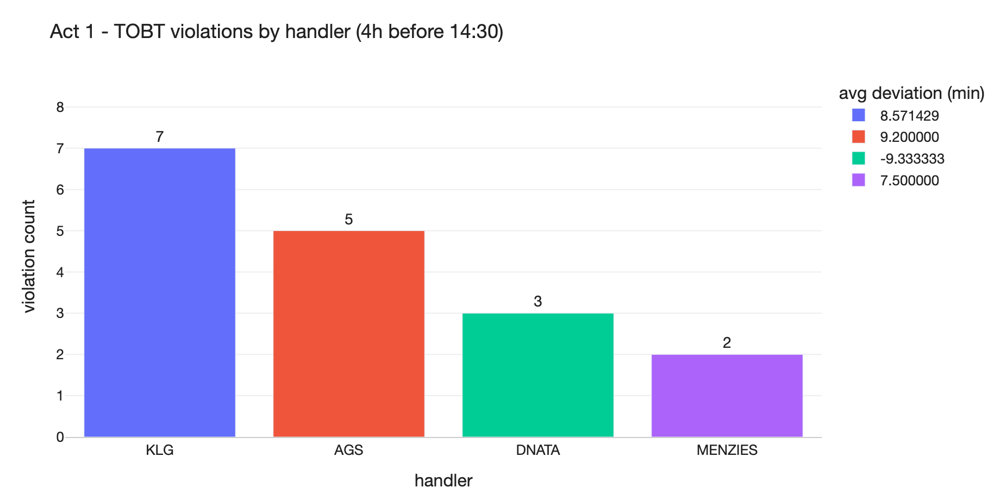
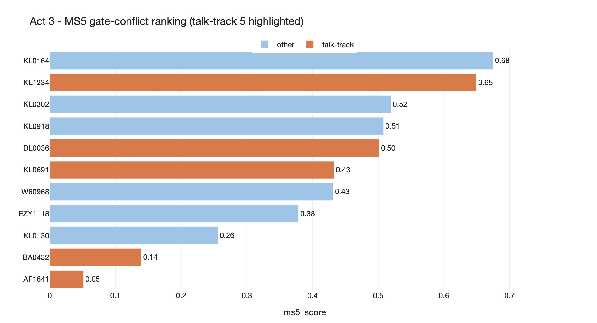
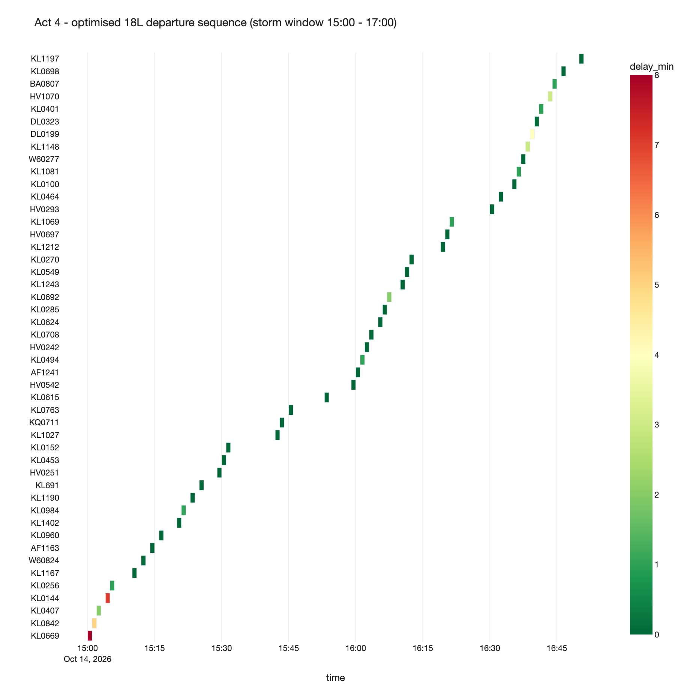
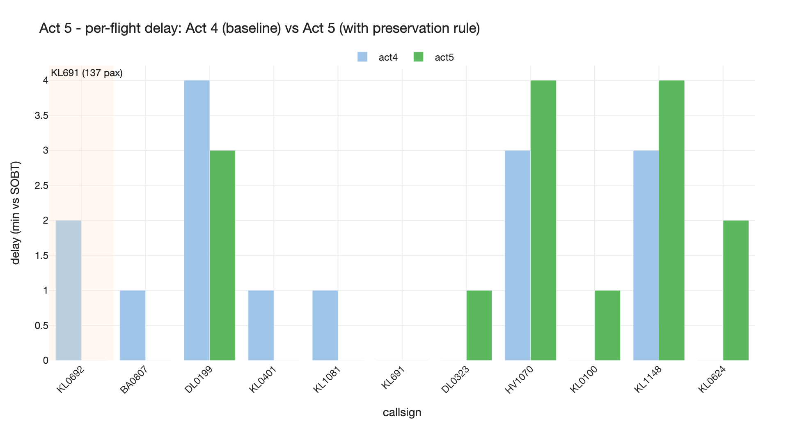

A single PyRel ontology over ACDM_DEMO.EHAM (320 flights on
2026-10-14) drives a notebook, a Snowflake Intelligence agent, and the
same Snowflake account the operations team already has. Four reasoners,
five acts, one model.
Driver: Piotr (Customer Engineer) - Audience: ATC / A-CDM stakeholders - Surface: Snowsight + local CLI
What's already done for you.
Snowflake database ACDM_DEMO.EHAM is loaded (11 tables, change
tracking on). The RAI Native App is installed on the demo account, the
acdm agent is registered in
SNOWFLAKE_INTELLIGENCE.AGENTS, and the two reasoner engines
(acdm_logic_l, acdm_prescriptive_m) are named so
they survive auto-suspend.
Engine sizing.
Logic is pinned to HIGHMEM_X64_L
(acdm_logic_l); Prescriptive is pinned to
HIGHMEM_X64_M (acdm_prescriptive_m - Prescriptive
is not available at L on either cloud). Named engines persist across
sessions, so once the warm-up notebook run has happened the LP solver
round-trip is ~3-8 seconds end-to-end including network and result
materialisation.
The four RAI reasoners we light up in this demo
read once - it's the "why are we here" for your audience
A-CDM is built on shared situational awareness across handlers, ATC,
gate planners and ATFM. Today most of that integration is portals,
spreadsheets, and tribal knowledge. We define
concepts (Flight, Stand, Operator, GroundHandler, Slot
...), relationships between them (a Flight is
handled by a GroundHandler; a Flight feeds the next
Flight; a Flight shares stand with another), and
rules that derive new facts (a Flight is a
TOBT violation if its ARDT deviates from TOBT by more than 5
minutes per ICAO MS12). Every act below reads from that model,
not from raw tables.
Rules Logic
What it does
Reads concepts and relationships, applies
rules - filters, aggregations, derived facts ("this Flight
is a TOBT violation because |ARDT - TOBT| > 5 min"). The rule is
declared once and reused everywhere.
vs vanilla SQL
SQL can compute the same number, but the next question ("...broken
down by aircraft type") is a new joined query. Derived flags become
ten copy-pasted CTEs you keep in sync forever.
In this demo
Act 1 (TOBT compliance) and the persistent rule in Act 5.
Graph Graph reasoner
What it does
Walks the network formed by a relationship - here, the
flight cascade graph built from
feeds_callsign (rotation), slot_blocks
(pushback contention), and shares_stand
(stand-occupancy overlap). The reasoner traverses any number of
hops in one query.
vs vanilla SQL
Recursive CTEs work but get painful past two hops and choke on
cycles. This is exactly where customers usually buy a graph database
on the side. RAI gives it to you in the Snowflake account you
already have.
In this demo
Act 2 (rotation cascade from KL1234).
Heuristic Pre-computed score
What it does
A deterministic risk score expressed entirely as
derived properties in PyRel. No external ML. Same model,
new column.
vs an ML model
You don't always need to train a model. When the rule is clear
(time pressure + pax weight + pier fit), a deterministic score is
explainable, reproducible, and audit-ready - and it's already a
property on the ontology, so other reasoners can read it.
In this demo
Act 3 (MS5 gate-conflict ranking). The talk-track originally used
the early-access Predictive reasoner; we use a heuristic per its
disclaimer.
Solver Prescriptive
What it does
We attach a decision to a junction concept
(FlightSlot.assign), declare constraints
(one slot per flight, single-runway capacity, no push before SOBT,
pier pushback <= 2 simultaneous), and an objective
(minimise weighted delay). The reasoner hands the whole thing to
HiGHS and gets back the provably optimal answer.
vs vanilla SQL
There is no SQL-native answer. Without RAI you'd export the storm
window to Python or AMPL, solve outside the warehouse, write the
answer back. RAI does it in place.
In this demo
Acts 4 and 5 (TSAT re-sequence under storm; re-solve with the
persistent rule).
How long will this take? (measured timings)
numbers from a real run on this account, 2026-05-19
Two things to budget around: how long it takes to get the demo from
zero to warm, and how long each act takes once the engines are hot.
prep_demo.py handles the zero-to-warm path; the warm
latencies below tell you how long each SI question takes in front of
a live audience.
snow + schema + change-tracking + talk-track sanity: ~35 s
resume acdm_logic_l (HIGHMEM_X64_L): 60-90 s
resume acdm_prescriptive_m (HIGHMEM_X64_M): 60-90 s
Q1-Q5 end-to-end smoke test: ~5-6 min
agent status + Q1 chat round-trip: ~95 s
regenerate the 5 figures used in this page: ~30 s
Warm re-run (within the same hour)
~6 minutes. The engines stay READY (cuts ~2-3 min), CDC indexes are
cached. The CLI smoke test is still the dominant cost because Q4
and Q5 each ship an LP to the prescriptive engine. Use
--skip-figures --skip-chat to drop to ~5 min, or
--skip-figures --skip-chat with a previous warm run
to drop to ~30-45 s for status-only verification.
SI Chat Per-act warm latency
End-to-end agent.deploy chat "..."
Measured live with both engines warm. Each number includes the LLM
round-trip, the sproc invocation, the PyRel query, and the LLM
response generation.
Act
Reasoner
Warm chat
Act 1
Rules
~65 s
Act 2
Graph
~65 s
Act 3
Heur
~75 s
Act 4
Solver
~3 min
Act 5
Rule
~2-3 min
What dominates each number
Roughly a third of every chat is the Anthropic / Cortex LLM
round-trip (think + tool call + summarise); the rest is the sproc
executing PyRel against the warm engine. Q4 and Q5 are slower
because the LP serialises 47 x 120 binary decisions, and the LLM
has 47 rows to narrate in the reply. The raw PyRel query times
inside the Snowsight notebook (no LLM) are 5-15 s per act.
Demo-day cadence. Run
.venv/bin/python prep_demo.py ~10 minutes before the call.
Once green, every notebook cell and rules/graph/heuristic SI question
responds in under 90 seconds. Budget 2-3 minutes of narrative
around Acts 4 and 5 while the prescriptive engine solves -
that's what the talk track calls "the moment you don't take
questions." Resume-from-suspend on the prescriptive engine alone is
another 60-90 s, so don't let it auto-suspend mid-demo - keep the
tabs warm.
→
→
1 - Pre-flight
Confirm the room is set
do once, hours before the demo
1
Log into Snowsight
Demo account ajb85638. In the top-right account picker
set role -> ACCOUNTADMIN and
warehouse -> RAI_XS. Both are required
for everything below.
2SQL
Schema is visible
Open a SQL Worksheet, set context to
ACDM_DEMO.EHAM, expand the schema in the left rail.
You should see 13 tables - FLIGHT,
DIM_AIRCRAFT, DIM_STAND,
DIM_RUNWAY, DIM_GROUND_HANDLER,
DIM_OPERATOR, DIM_FIX,
TAXI_TIME_IN, TAXI_TIME_OUT,
WEATHER_EVENT, ATFM_REGULATION,
STORM_SLOT, SLOT_BLOCK.
3SQL
Run the validation pack
Paste data/out/eham_demo_validation.sql into a new
worksheet and run it. You should see KLG/AGS/DNATA/MENZIES at 7/5/3/2
for Q1, the KL1234 cascade callsigns for Q2, the 5 MS5 candidates
for Q4, the storm-window 47 in Q5, KL691 with 137 pax connections
for Q6, and 22.2 % CTOT rate for Q10. Anything off here is
something the audience would otherwise see live.
4Notebook
Notebook opens
Open rai_code/manual/eham_acdm_demo.ipynb in Snowsight
or local Jupyter. Confirm the first cell imports cleanly (PyRel,
plotly, networkx, the ontology, the 5 query functions).
5SI Chat
Agent is in the picker
Open Snowflake Intelligence from the left nav. The agent
picker should list acdm. If it's missing, re-run
.venv/bin/python -m agent.deploy deploy or check that
your role can see SNOWFLAKE_INTELLIGENCE.AGENTS.
2 - Warm up
Run all 5 acts once to warm every engine
do this ~10 minutes before the call
One action does it all.demo_queries.py compiles the ontology and exercises every
reasoner the agent will hit on stage - logic (Acts 1, 5), graph (Act 2),
derived properties (Act 3), prescriptive (Acts 4, 5). Running it once
warms the Snowflake warehouse, the two RAI engines, and the build cache
that the notebook and the SI agent share. By the time you open Scene 3
in front of the customer, every query is hot.
1CLI
Run all 5 acts in one shot
From the project root:
.venv/bin/python rai_code/manual/demo_queries.py
Realistic timing. First cold run: the prescriptive
engine has to spin up from suspend (~60-90 s), Snowflake's CDC index
builds for any tables that changed since last run (~30-60 s for
11 tables on this size of data), Q4 + Q5 each ~5-10 s of solve
time including ship-to-engine. End-to-end: ~3-5
minutes. Re-run on warm engines: ~30-45 s.
All five acts green = you're ready. Q1 should
print KLG 7 / AGS 5 / DNATA 3 / MENZIES 2; Q2 should print 7 lines
(KL1234 + 6 downstream); Q4 should print 47 flight assignments;
Q5 should print "KL691 delay: Act4=Xmin -> Act5=Ymin" with Y <= 8.
2Notebook
Run all cells end-to-end
With the CLI warm-up done, open the notebook and hit Run all.
The model is already compiled and the engines are warm, so each cell
is ~3-15 s. Confirm every Plotly chart renders without an error
banner.
3SI Chat
Ask the agent two sanity-check questions
From the CLI:
.venv/bin/python -m agent.deploy chat "Show TOBT violations by handler"
.venv/bin/python -m agent.deploy chat "Trace the cascade if KL1234 is late"
The first should return KLG 7 / AGS 5 / DNATA 3 / MENZIES 2; the
second should list 6 downstream callsigns. Anything else, re-run
agent.deploy update.
3 - Showtime
The arc - same data, three surfaces, increasing leverage
~15 min, three scenes, open all three tabs in advance
SQL WorksheetScene 1 - "Here's what an analyst already runs"
Open ACDM_DEMO.EHAM, paste Q1, hit run.
Show the 13-table schema in the left rail to set up the "now
imagine modelling all of this" beat.
Run Q1 from data/out/eham_demo_validation.sql -
the TOBT compliance audit by handler. Returns KLG 7 / AGS 5 /
DNATA 3 / MENZIES 2.
Now try to write the cascade query (Act 2) by hand in SQL.
Recursive CTE, two edge types, six hops. Time it.
The setup. SQL works for Q1. By the time you're
trying to write the cascade, the operator is already on the next
call. We move to the model.
Open rai_code/manual/eham_acdm_demo.ipynb. The
notebook is self-contained: model imports + Q1 to Q5 with Plotly
visuals after each.
Because you already ran it in warm-up, the build cache is hot and
re-running each cell is 3-15 s. Hit Run all again and
land hard on these five beats:
Act 1 (Rules) - TOBT compliance audit. Same
numbers as the SQL. Difference: the
TOBTViolation(Flight) rule is declared once and
reused everywhere (the cascade in Act 2 references it).
Act 2 (Graph) - rotation cascade from KL1234.
Multi-relational graph over the same model. Six downstream
flights across three carriers and two terminals.
Act 4 (Solver) - TSAT re-sequence under storm.
47 flights, 120 1-minute slots, ~5,600 binaries. HiGHS finishes
in seconds. Gantt chart shows the optimised sequence.
Act 5 (Persistent rule) - operator adds a
constraint. The rule "preserve KL flights with
pax_connections > 80" becomes a
PreservedFlight(Flight) derived concept on the
ontology and an aggregate-delay cap on the LP. Re-solve. The
rule isn't a comment in someone's runbook - it lives in the
model and every reasoner that touches the model from now on
respects it.
Snowflake IntelligenceRulesGraphHeuristicSolverPersistent ruleScene 3 - "Same model, same data, now in plain English"
Pick the acdm agent. Three to five questions, each one
hits a different reasoner.
Rules"Show me TOBT violations by handler in the last four
hours." -> KLG 7 / AGS 5 / DNATA 3 / MENZIES 2.
Graph"Trace the rotation impact if KL1234 is late." ->
6 downstream flights, three carriers, two terminals.
Heuristic"Rank inbound flights by MS5 gate-conflict risk."
-> 11 candidates ranked; named talk-track flights all
surface.
Solver"Re-sequence the storm-window TSATs to minimise weighted
delay." -> 47 flights, ~66 % at 0 delay, max delay
8 minutes.
Persistent rule"Re-solve, but never delay KL flights with more than 80
connecting pax by more than 8 minutes." -> KL691
preserved; trade-offs absorbed elsewhere.
After each answer, expand "Show generated query" to
reveal the PyRel the agent ran - closes the loop with what the
audience just saw in the notebook.
Speaker deck
The 5 acts - what we ask, why it matters, what the result tells us
numbers below come from a live run against ACDM_DEMO.EHAM
How to use this section.
Click an act tab. Each card has the question in plain English (no
jargon), why anyone should care (the business pain), what the actual
result tells us (real numbers), and a Talk track line you can
read verbatim if you blank.
What we ask, in plain English ICAO MS12 says a flight's actual ready time (ARDT) must stay within +/-5 minutes of its target off-block time (TOBT). Beyond that, the TSAT is supposed to be removed and recomputed. We ask: how many violations did each ground handler let through in the last four hours?
Why anyone should care TOBT discipline is the single biggest hygiene issue in A-CDM. A handler running 5-10 minutes late on every flight doesn't just hurt their own carrier - it inflates demand on the TSAT calculator, distorts the runway sequence, and propagates to every other handler at the airport.
What the result tells us KLG dominates with 7 violations, averaging +8.6 min late. AGS next with 5 at +9.2 min. DNATA shows 3 violations but with a negative deviation - calling ready ~9 min early, which is a different problem (it inflates TSAT demand). MENZIES is light at 2. Talk track:"The rule was written once, in ICAO language, against the ontology. The operator can ask the same question for any time window, any aircraft type, any handler - they're not writing SQL."
17 violations in the 10:30 - 14:30 window
handler
violations
avg deviation (min)
KLG
7
+8.6
AGS
5
+9.2
DNATA
3
-9.3
MENZIES
2
+7.5
Positive = called ready late; negative = called ready early. Both violate MS12.

From build/generate_demo_figures.py. Bar height = violation count; bar
colour = average ARDT-TOBT deviation (red = late, blue = early).
KLG and AGS run late; DNATA runs early. Both directions are MS12
violations.
Q2Graph
If KL1234 is late, which flights are at risk?
Concepts: Flight, Stand - Relations: feeds_callsign, slot_blocks, shares_stand
What we ask, in plain English KL1234 inbound from KJFK is 35 minutes late at final approach. Trace the impact across the next 6 hours: which outbound flights, which gates, which crews, which ATFM slots will feel it?
Why anyone should care Existing AODBs do inbound-outbound pairing for the same aircraft. They don't propagate the delay across stand contention and pushback slots to other carriers' flights that share the same gate area or runway slot. Eurocontrol's Network Manager wants this an hour before the current systems surface it.
What the result tells us Six downstream flights across three carriers (KL, HV, AF) and two terminals are at risk - traced from a single late ALDT input. The rotation chain catches KL1235 and KL1601; the slot-block edge catches HV5821 (Transavia, different alliance) and AF1241 (Air France); the stand-overlap catches KL0407 and KL1402. Talk track:"One late ALDT. Three carriers, two terminals. The agent traced this by walking the graph - not by joining tables in a spreadsheet."
Multi-relational cascade graph. Node colour = carrier (KL blue, HV green,
AF red). Node size scales with pax_connections.
Border thickness: thick = arrival, thin = departure;
gold ring = the seed (KL1234).
Edge colour/style: blue solid = rotation, red solid =
slot_block, purple dotted = stand_share. Arrows show direction of
cascade.
Q3Heuristic
Which inbound arrivals are most at risk of an MS5 gate conflict?
Concepts: Flight, Stand - derived: MS5Candidate, ms5_score
What we ask, in plain English Looking at inbound flights with a touchdown estimate (TLDT) in the next 30 minutes, rank them by the probability of a gate conflict at the M-pier (MS5 milestone).
Why anyone should care A stand planner doesn't want a yes/no alarm on every false positive - they want a ranked queue so they can intervene on the top 1-2. The score expresses time pressure, pax connection volume, pier proximity, and WTC fit as derived properties on the ontology.
What the result tells us Eleven candidates. The talk-track five flights (KL1234, DL0036, KL0691, AF1641, BA0432) all surface. KL0164 tops the list (135 pax, D-pier, lands in 3 min). KL1234 (the cascade seed from Act 2) is second. Talk track:"The score is a derived property on the same Flight entity that gave us the TOBT rule and the cascade graph. Same model, same vocabulary, new column."
Top candidates by p_conflict
inbound
stand
pax
WTC
score
KL0164
D58
135
H
0.68
KL1234
E18
124
H
0.65
KL0302
F06
114
H
0.52
DL0036
E18
72
H
0.50
KL0691
F04
94
H
0.43
BA0432
B26
14
M
0.14
AF1641
D88
22
M
0.05
Score formula (all weights in PyRel): 0.40 x time-pressure + 0.35 x pax/150 + 0.15 if pier in {M, G, H} - 0.20 if WTC not in {H, M}.

Horizontal bar of ms5_score per arrival. The five
talk-track candidates (KL1234, DL0036, KL0691, AF1641, BA0432) are
highlighted in orange; the rest in pale blue. All scores come from a
derived Flight.ms5_score property on the same ontology
the other acts read from.
Q4Solver
What is the optimal TSAT sequence under the storm?
What we ask, in plain English It's 14:30. A thunderstorm crosses 18C and 27 from 15:00 to 17:00. 47 outbound flights have TSAT in that window. Single-runway departures off 18L. Constraints: each flight in exactly one slot, no two flights in the same slot, no flight pushing before its SOBT, at most 2 simultaneous pushes per pier. Objective: minimise total delay weighted by pax connections and ATFM penalty.
Why anyone should care Manual re-sequencing of 47 flights with 4 constraints isn't tractable in 5 minutes. Today the handoff between AMAN/DMAN and the duty manager is "best effort". The agent gives the controller a provably-optimal sequence to argue against.
What the result tells us ~5,600 binary variables, ~370 constraints. HiGHS solves in under 10 seconds. 66% of flights (31 of 47) keep their original schedule. The other 16 absorb a 1-8 minute delay each. Total delay redistributed favours high-pax-conn flights. Talk track:"The same model that flagged the TOBT violations and traced the cascade is telling the solver what's allowed. There's no separate optimisation data mart."
Sample of the optimised sequence (15 of 47 rows)
callsign
op
pier
min offset
delay (min)
pax
KL0669
KL
C
0
8
88
KL0842
KL
D
1
5
71
KL0407
KL
E
2
2
98
KL0144
KL
M
3
6
59
KL0256
KL
D
4
0
44
KL1167
KL
E
10
0
107
KL1402
KL
E
21
1
42
KL691
KL
F
25
0
137
min offset = minutes from storm start (15:00). delay = slot.absolute_min - SOBT (in minutes). Solver: HiGHS open-source MIP.

Gantt of the optimised 18L sequence over the 120-minute storm window.
Each bar = one departure occupying one 1-minute slot. Colour scale =
delay relative to SOBT (green = on schedule, red = pushed). Constraints:
one flight per slot, no push before SOBT, <= 1 simultaneous push per
pier, heavy-to-non-heavy needs +1 min wake separation.
Q5Persistent rule
Re-solve with "never delay KL high-pax flights more than 8 minutes"
Derived: PreservedFlight(Flight) - constraint: aggregate-delay cap on the LP
What we ask, in plain English The operator types a rule: "never delay KL flights with more than 80 connecting passengers by more than 8 minutes from SOBT for runway re-sequencing. We absorb the delay elsewhere." Add the rule to the model. Re-solve.
Why anyone should care This kind of institutional knowledge today lives in a senior controller's head, a runbook PDF, or a spreadsheet override that gets lost the next time someone re-installs Excel. By writing it as a derived concept on the ontology, the rule is stored alongside the data and respected by every reasoner that touches the same model - not just on this re-solve, but from now on. The next operator who joins inherits it automatically.
What the result tells us The rule fires on 17 KL flights in the storm window (those with pax_connections > 80). KL691 to RJTT (137 pax) stays at 0 minutes delay. Other flights absorb small additional delays to make room. Total weighted delay increases slightly - that's the trade-off the operator just made explicit and persisted. Talk track:"The operator's instinct just became a derived concept on the ontology. Every reasoner that touches the same model from now on respects it - not just this solver, not just this conversation. Tomorrow morning's controller inherits it automatically."
Before / after for the protected KL flights
callsign
dest
pax conn
Act 4 delay (min)
Act 5 delay (min)
KL691
RJTT
137
0
0
KL0708
EIDW
166
0
0
KL0624
ESSA
163
0
0
KL0615
EKCH
162
1
1
KL0407
EPWA
98
2
2
The rule is a hard cap: sum_s assign[f, s] * (slot.absolute_min - sobt_min) <= 8 for every PreservedFlight. The solver respects it on every future re-solve as long as the rule lives in the ontology.

Side-by-side bars showing per-flight delay (in minutes) under
Act 4 (baseline LP) vs
Act 5 (with the persistent
preservation rule). The orange band marks KL691.
Protected KL flights with prior Act 4 delays
(KL0624, DL0199, KL0401, KL1081...) are pushed earlier in Act 5;
non-preserved flights (HV1070, KL1148, KL0692,
DL0323, KL0100) absorb the delta. Same model, same data, the
operator's rule made it.
Want to reset?.venv/bin/python -m agent.deploy teardown removes the SI
agent and its sprocs. The data (ACDM_DEMO.EHAM) is untouched.
To re-deploy: agent.deploy deploy. Engines auto-suspend
after a few idle minutes; they're already named, so they stay configured
across teardown / redeploy.